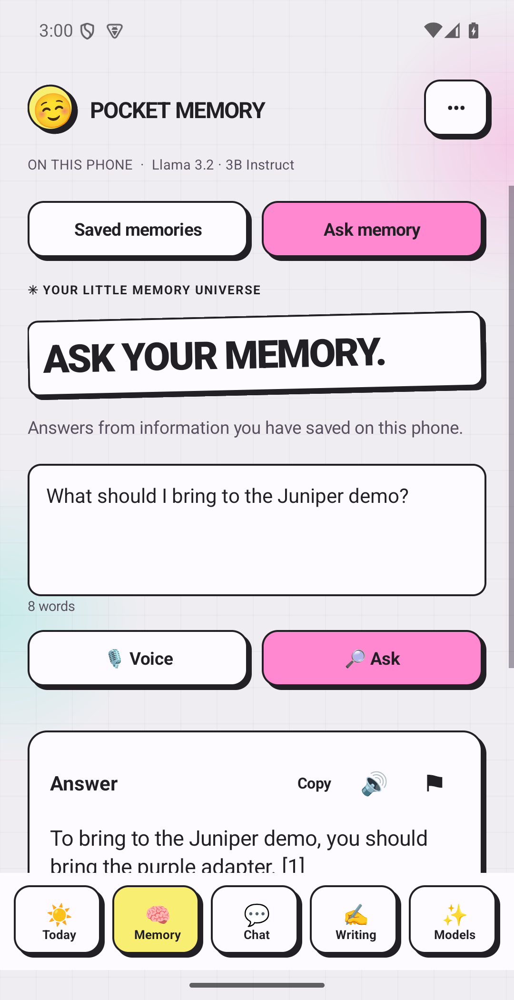
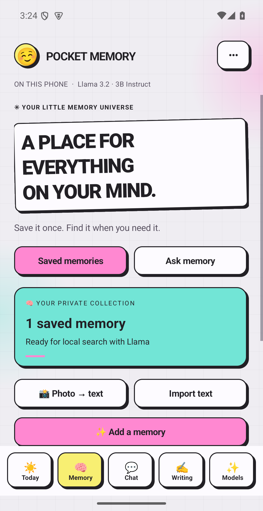
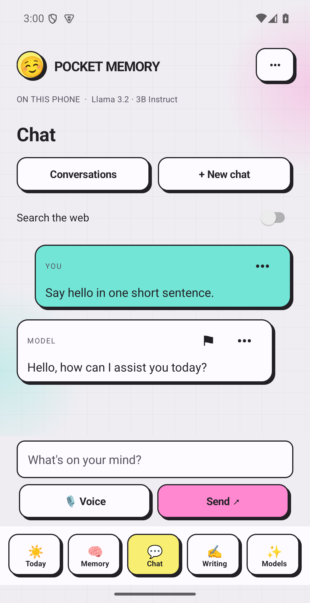
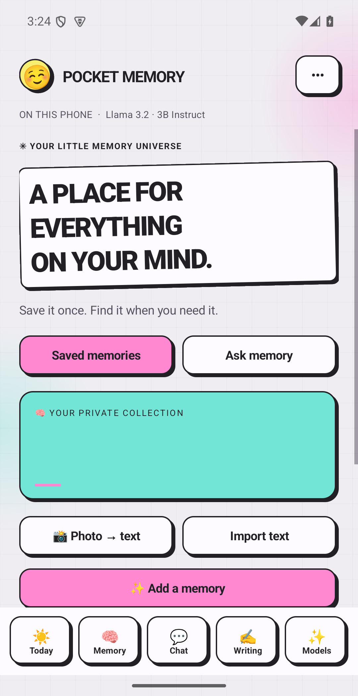

Save a detail
Juniper demo kit
Bring the purple adapter to the Juniper demo.
Save a useful detail. Ask Llama about it later. Chat, improve a draft and organize your day in Pocket Memory.
Llama 3.2 3B runs on your phone. The model downloads inside the app.

Juniper demo kit
Bring the purple adapter to the Juniper demo.
“What should I bring to the Juniper demo?”
Llama identified the purple adapter and returned a reference to the saved memory.
Verified with the actual on-device Llama pipeline. Answers still need review.1:55 narrated walkthrough, edited from actual Android/browser captures with fictional data. No simulated taps or speed claim. Download video.



Turn on Search the web for a public-information question. One bounded MCP search supplies excerpts; Llama reads them on your phone and returns source URLs.
Only that message goes to Exa. Saved memories and earlier conversation are not attached. No automatic research retry loop.Open Browser companion from Settings on the same phone. A permitted browser agent can find memories and ask the phone's Llama.
Local, 15-minute session. Browser support is required for WebMCP; ordinary buttons also work. Your browser agent may process returned content under its own provider's policy.Allow around 2.2 GB free storage. An 8 GB RAM phone is a planning guide; physical-phone performance remains unverified. Memory, Chat and Writing work offline after setup. Downloads and web research need a connection.
Read protocol and privacy details ↗The only offered language model is Meta Llama 3.2 3B Instruct, Q4_K_M. The existing Pocket Memory Android app is the foundation. This edition adds the Llama-only setup, simpler model lifecycle, guarded MCP web answers and optional WebMCP companion.
The hackathon submission is being corrected and has not been submitted. The narrated walkthrough uses actual captures and fictional data. No accuracy, speed or production-readiness claim is made.